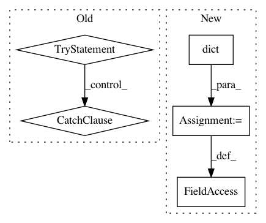

4b8716fd4bd6f462a9db9eee958f2508576ec019,gluoncv/utils/metrics/coco_detection.py,COCODetectionMetric,__init__,#COCODetectionMetric#Any#Any#Any#Any#Any#,32
Before Change
else:
t = ""
self._filename = osp.abspath(osp.expanduser(save_prefix) + t + ".json")
try:
f = open(self._filename, "w")
except IOError as e:
raise RuntimeError("Unable to open json file to dump. What(): {}".format(str(e)))
else:
f.close()
def __del__(self):
if self._cleanup:
try:
os.remove(self._filename)
After Change
self._current_id, len(self._img_ids)))
import json
try:
with open(self._filename, "w") as f:
json.dump(self._results, f)
except IOError as e:
raise RuntimeError("Unable to dump json file, ignored. What(): {}".format(str(e)))
pred = self.dataset.coco.loadRes(self._filename)
In pattern: SUPERPATTERN
Frequency: 3
Non-data size: 5
Instances
Project Name: dmlc/gluon-cv
Commit Name: 4b8716fd4bd6f462a9db9eee958f2508576ec019
Time: 2018-06-15
Author: cheungchih@gmail.com
File Name: gluoncv/utils/metrics/coco_detection.py
Class Name: COCODetectionMetric
Method Name: __init__
Project Name: uqfoundation/mystic
Commit Name: a1c0cae864a52f1581bfdbc2c9f855dc9bca7f61
Time: 2017-07-07
Author: mmckerns@968178ea-60bd-409e-af13-df8a517b6005
File Name: mystic/scripts.py
Class Name:
Method Name:
Project Name: bokeh/bokeh
Commit Name: 947e3c02d66cb62192ee1ea5e4a71d47b3477b33
Time: 2015-12-19
Author: bryanv@continuum.io
File Name: examples/embed/widget.py
Class Name:
Method Name: